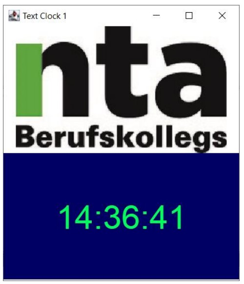

Ich habe das Programmieren am anfange im Gymnasium gelernt. Dabei haben wir die Programmiersprache Java benutzt.
Der Unterricht umfasste dabei Grundelemente wie Objektorientierung, Kontrollstrukturen und Vererbung. Ebenso wurden Themen
wie verkettet Listen, Binärbäume und Graphen.
Java wurde ebenfalls an der NTA-Unterrichtet. Dabei lag der Fokus auf dem Erstellen von Grafischen Benutzeroberflächen.
Folgendes ist ein Beispiel:
Aufgabe: Erstellen einer digitalen Uhr

Die Uhr soll genau so aussehen
Um die Aufgabenstellung zu Erfüllen wurde folgender Code geschrieben:
clock.java
import javax.swing.*;
import java.awt.*;
import java.util.Calendar;
import java.util.Random;
public class clock {
private int h, m, s;
private JLabel l = new JLabel("",SwingConstants.CENTER);
private JFrame frame = new JFrame("Clock1");
private Random r = new Random();
public clock() {
frame.setSize(350, 400);
frame.setDefaultCloseOperation(JFrame.EXIT_ON_CLOSE);
frame.setVisible(true);
l.setFont(new Font("sansserif",Font.PLAIN, 48));
ImageIcon img = new ImageIcon("src/img.png");
JLabel logo = new JLabel(img);
frame.setLayout(new GridLayout(2,1));
frame.add(logo);
frame.add(l);
}
public void clock_run() {
while(true) {
Calendar now = Calendar.getInstance();
h = now.get(Calendar.HOUR_OF_DAY);
m = now.get(Calendar.MINUTE);
s = now.get(Calendar.SECOND);
try {
Thread.sleep(250);
l.setText(String.format("%02d:%02d:%02d", h, m, s));
l.setForeground(Color.decode(String.format("#%06x", r.nextInt(0xffffff + 1))));
l.setOpaque(true);
l.setBackground(Color.decode(String.format("#%06x", r.nextInt(0xffffff + 1))));
frame.repaint();
}catch(InterruptedException ex) {
Thread.currentThread().interrupt();
}
}
}
}
main.java
public class main {
public static void main(String[] args) {
clock c = new clock();
c.clock_run();
}
}